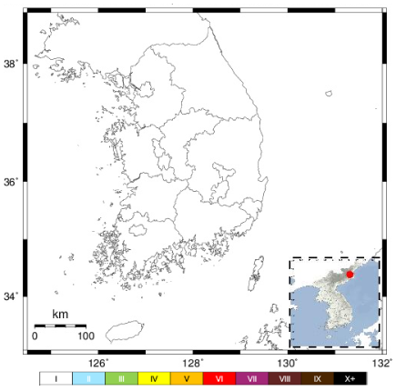

최신지진
3.2
규모
상세 정보
- 발생시각 : 2024-10-07 07:59
- 위치 : 전북 장수군 북쪽 17km 지역 (두줄일 경우)
- 주소 : 장수군 천천면 연평리 12-12 (두줄이 될 경우)
- 깊이 : 6km
주요 지점과의 거리
-
월성원전 47km
-
울산 57km
-
새울원전 63km
-
부산 60km
발효 지역 없음
발생 위치
최신 지진데이터
주요 지점
-
원전
-
지점
규모
-
6.0 ~
-
5.0 ~ 5.9
-
4.0 ~ 4.9
-
3.0 ~ 3.9
-
2.0 ~ 2.9
진도 상세정보 (계기진도)

지자체별 진도
-
남해군 / 3
-
산청군 / 3
-
합천군 / 3
-
함양군 / 2
-
거창군 / 2
-
함양군 / 2
-
함양군 / 2
데이터 없음